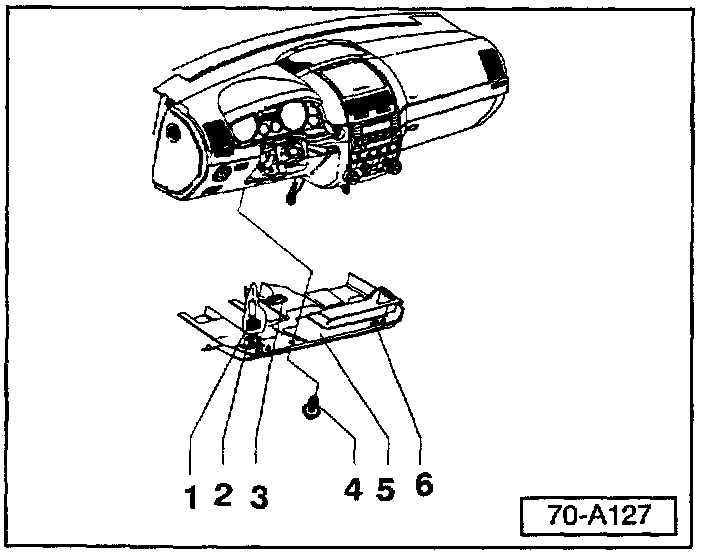
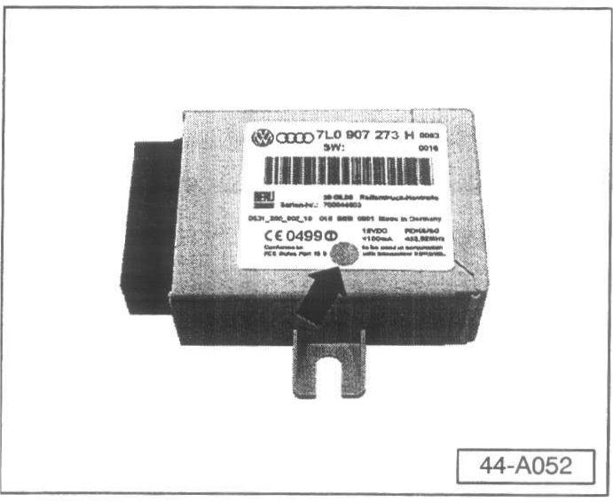
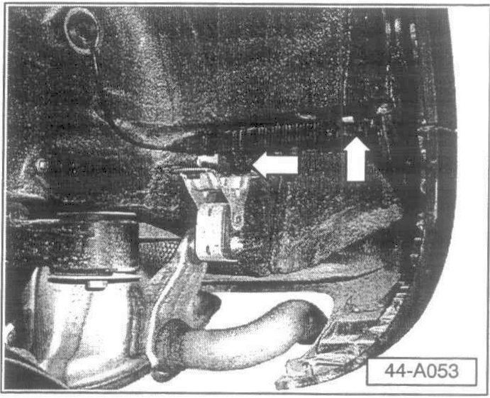
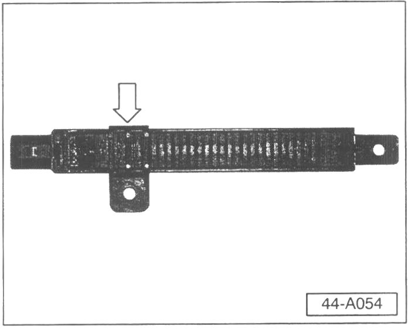
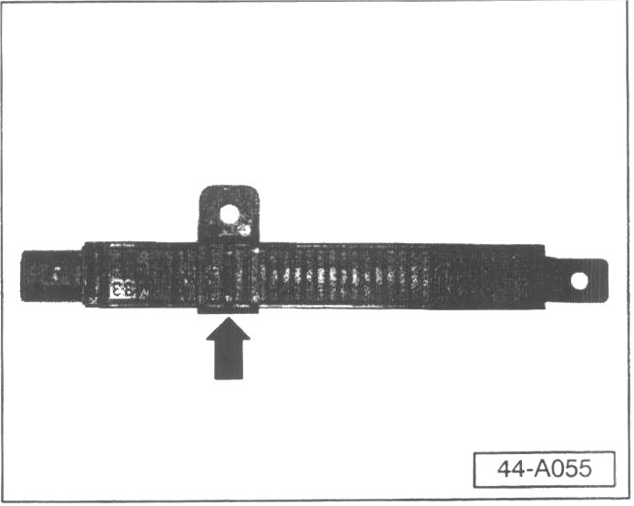
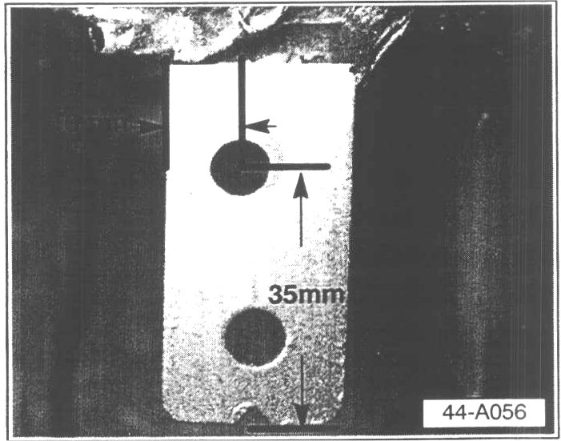
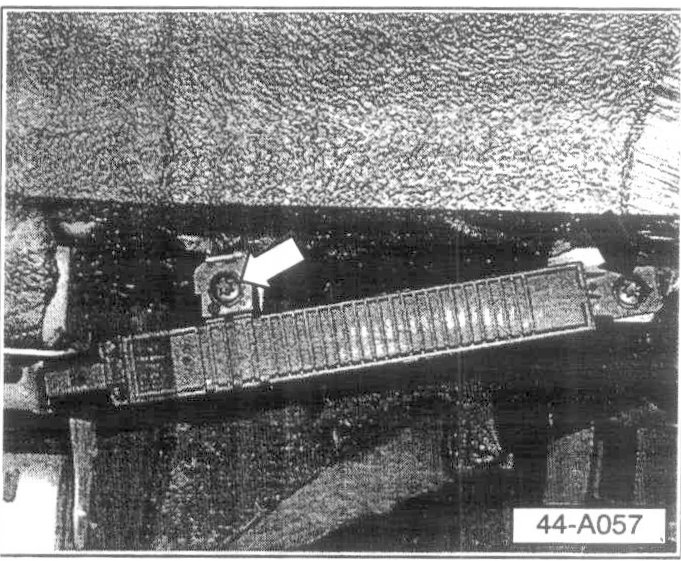
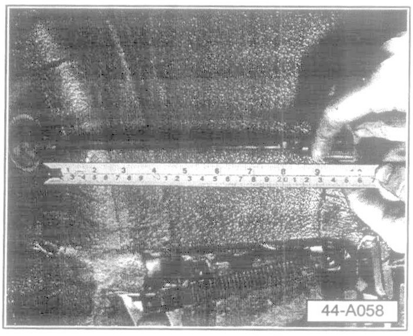
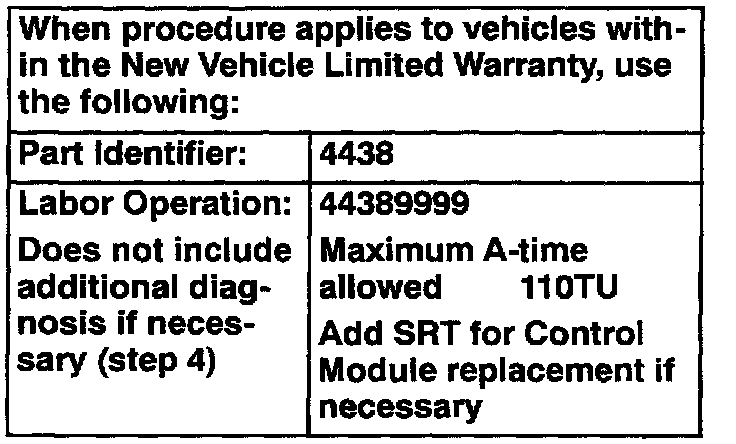

Tire Pressure Monitor - Warning Lamp ON
Group: 44Number: 03-02
Date: Sept. 25, 2003
Subject:
Tire Pressure Monitoring System, Warning Light Is ON
Model(s):
Touareg With Tire Pressure Monitoring System 2004
Condition
Tire Pressure Monitoring System Warning Light is ON.
Service
- Perform the following four steps in order.
1. Check and if necessary, replace Tire Pressure Monitoring Control module prior to VIN: 4D018766.
2. Relocate left rear Tire pressure monitoring antenna prior to VIN: 4D019197.
3. Reassemble vehicle and follow "store tire pressure values" instructions
4. Diagnosis information listed in VESIS under 'additional information
1. Check and if necessary, replace Tire Pressure Monitoring Control module prior to VIN: 4D018766
- Switch ignition OFF.
- Remove bolt -4- (2X).

- Pry driver side footwell cover -5- out of mountings near clip -6- using wedge T10039/1.
- Pull cover out of rear mountings.
- Disconnect footwell light -3- from wiring harness.
- Separate wiring harness -1- from diagnosis plug -2-.
- Disconnect control module (mounted on A-pillar)

- Inspect control module for Part No: 7L0 907 273H with green dot (arrow) (indicating latest level part).
If control module is Part No: 7L0 907 273E or 7L0 907 273H without green dot:
- Install new control module with Part No: 7L0 907 273H with green dot (indicating latest level part).
- Code module to 10339 (using VAS 5051 Guided Fault Finding).
Continue to Step 2.
If control module is Part No: 7L0 907 273H with green dot:
- Reinstall control module and continue to Step 2.
2. Relocation of the Antenna on vehicles prior to VIN 4D019197.
- Remove wheel liner in left rear wheelhouse.
- Remove antenna and reverse mounting bracket on the antenna as follows:

- Remove both mounting bracket fasteners (arrows).

- Remove fastener bracket from old location (arrow).

- Flip bracket and install as shown (arrow).

- Mark Antenna Mounting bracket in location as shown.
- Drill mounting bracket using a 6.35 mm (1/4 inch) drill bit and remove any burrs from the hole.
^ Paint any bare metal to eliminate any corrosion possibility by applying two coats of Body color touch-up paint.
Note:
Allow sufficient drying time between coats.

- Assemble Antenna to bracket after allowing 15 minutes of paint drying time.
Note:
First, install fastener at fixed point (black arrow), then slide bracket on antenna as necessary to align second fastener (white arrow).

- Adjust cable to body grommet length to 25 cm.
Note:
^ Length of antenna cable must be 25 cm from groove in grommet to connector end. Pull antenna cable through grommet to adjust length.
- Install connector to antenna.
- Reassemble removed parts.
3. Follow instructions in Owner's Manual "Tire pressure monitoring system" to store tire pressure values
If system learns and stores values and no warning lights are ON.
^ Work is complete.
- If system does not learn and store values or warning lights are ON.
- Continue with Step 4.
4. Diagnose using the information found in VESIS under: Library/Additional information/Other topics/Tire pressure monitoring system.

Warranty Information